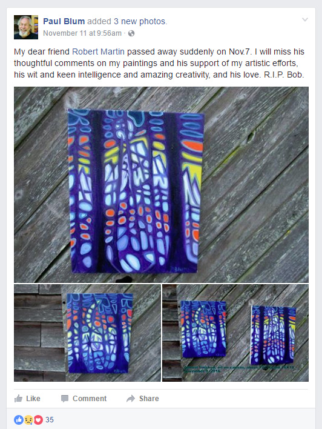
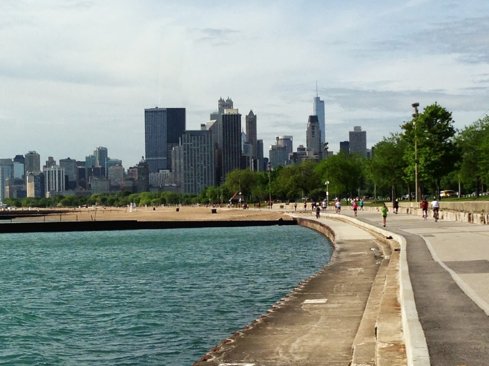

Memories of Bob
IntroductionI, like much of the country, was really upset and depressed after our national nightmare of November 8th, 2016, when Donald Trump was elected to be the next President of the United States. For several days I walked around in a funk, not being able to get this horrible, history-shaking event out of my mind. I didn't watch any TV; I couldn't stand to hear the phrase, "President-elect Trump," or see images of him or his family or cronies plastered across the screen, or hear the sound bites about what went wrong. I feared for the future of our country after seeing its hateful underbelly exposed. I needed a distraction. And the distraction came on Friday, November 11th - in the form of a Facebook post which showed up on the wall of my
Facebook friend Bob Martin, an old friend from high school who I hadn't seen in over 40 yearsnote. Here's the post, posted by Bob's friend Paul:  I was shocked and had to think a minute as to whether this was the Bob Martin I knew or maybe some other Bob Martin. But I quickly realized, knowing Paul and Bob were good friends, and, in fact, they lived near each other in Washington state, and were both artists, that it was the Bob Martin I knew. To make sure, I contacted his younger sister Judy (a Facebook friend of mine) who I had known almost as long as I'd known Bob. She told me she went over to his house to watch the election results with him and found him dead. She didn't elaborate any further; she didn't need to. Even though I hadn't seen Bob in so long, it hurt me badly. As I write this on November 13th, Bob's death has become the distraction I needed, moving my thoughts about the election far away and on to something else; never mind that the something else was a different sort of, much more tragic, event. So now I've been thinking about him and all the great times we had way back in the '60s and regretting the fact that I never got to reconnect with himnote. So I thought I'd just jot down a few short little vignettes, perhaps meaningless and uninteresting to anyone other than me (but hopefully not), from that time with Bob. MusicBob and I were close friends in high school. He was several years younger than me, but that didn't matter at all. A lot of what we had in common was our love of music, especially folk music, and, while I was just learning to play the guitar, Bob was quite proficient. I learned a lot from him. I lived with my parents and brother in a small two bedroom apartment, small enough to never have friends come over to visit. Bob, on the other hand, lived in a nice big house, with a family room that was perfect for our music sessions. Besides Bob and me, our friends Scott and Chuck would often meet up at Bob's house to make music together. I played guitar, Scott played an upright bass, Chuck played the banjo, and Bob played just about any stringed instrument we could get our hands on; instruments like the mandolin and auto-harp.
"Wait 'til The Wind Dies Down"
Learning to DriveBob was several years younger than me and in my final years of high school before going off to college, he didn't drive. He never really seemed to want to (nor did he ever seem to need to), but I was always up for trying to teach him if and when he did want to learn. So it was on a snowy winter day one year when he decided to give it a try. I had a car, an old Nash Rambler; it was my mom's, but she hardly ever drove it and it became more or less mine as I used it all the time. I don't know if this was the first time Bob had ever driven, but it sure seemed like it! He was nervous, and so was I, and as we came to a curve in the road leading to his house, he hit the brakes on a snowy, icy road and started skidding - right towards a lamp post! Slowly, but not too slowly, we drifted out of control towards the curb and the lamp post's cement base, and, not knowing what to do, Bob just casually held on to the wheel and hoped for the best. For my part, I imagined my parents' anger when they would eventually see the banged up car. Fortunately, we were stopped by the curb, the front of the car just inches from the lamp post, with no damage done. I took over driving and got us back to his house safely. It was probably pretty stupid of me to start him out on an icy road. And that was the last driving lesson I ever gave Bob. Going To NYCAfter high school, I spent three semesters at the University Of Illinois in Champaign-Urbana. During my second semester, the Fall/Winter semester of 1964-65, I lived in an off-campus one-room apartment. I hated college, and within a month into the semester, stopped going to classes. I didn't tell my parents - they wouldn't know until grades came out and got sent home - so I just stayed in town and enjoyed the "college life" Champaign-Urbana had to offer. At some point that semester, Bob came down from Chicago to live with me. I remember we'd buy canned food like Spam and mini-hot dogs in barbecue sauce and other stuff like that, eating most of it right out of the can, not even heating it up. And we'd play music, a lot. Bob wasn't there for more than a few days, when one day we just decided to leave town and hitchhike out to New York City to try to meld in with the folk music scene in Greenwich Village. We loved a lot of the music that came from performers out East; Bob Dylan, of course, Dave Van Ronk, Erik Darling, and even Peter, Paul, and Mary, and so many others, and wanted to be close to it, to be involved with it. We had to go to Greenwich Village. Our hitchhiking went pretty well, despite the cold weather. We left Champaign and headed east along Interstate 74 towards Indianapolis. We had no plan and not much money, but we both carried our guitars along with us. When people would stop to pick us up and ask us where we were going, we told them we'd be happy to ride along with them as far as they could take us in the general direction of New York City. Catching a ride got tough when we hit Indianapolis, with the highway bypasses going around the city to the north and south, and we spent a lot of time walking there, east, of course. Eventually we got picked up by a traveling salesman in a Volkswagen bug who was also headed somewhere out east (but not to New York City). With the three of us, his suitcases, and our two guitars, it was pretty crowded. As we rode on, he told us he was planning on spending the night in Richmond, Indiana, right on the Indiana/Ohio state line. Not bad for our first day on the road. Our friend told us he would be spending the night in the Richmond Holiday Inn and, if we could get there in the morning, we could continue on east with him. We, of course, had to find some junky one-star (or less) motel to stay in, based on the amount of cash we had. So we walked around Richmond looking, but before we found one, we got picked up by the cops. It turned out that Bob's parents had reported him as a runaway, and the word got out to the Indiana State Highway Patrol, and, well, they found us. I was over 18, so they couldn't do anything to me, but Bob was still a minor, so they took him away to hold him overnight until his parents could come and pick him up the next day. Me, they dropped me at a cheap motel, just the sort of place Bob and I were looking for, and, despite some comments about "dumping these guitar-playing beatniks' bodies in a field just across the state line," they let me go. Into the cockroach-infested motel I went. When I got to the main desk to check in, who should I see sitting in the lobby of this dump, but our traveling salesman friend! He apparently tried to impress us with his Holiday Inn reservation, but here he was now, sitting in a ratty old chair watching television with a few other nattily dressed men. I didn't let him see me - no need to embarrass him - and quietly sneaked off to a bare-bones room to spend the night...while Bob spent the night in the Richmond jail. Bob's parents drove through the night to fetch Bob out of jail and take him back home. Fortunately, they were willing to take me back with them. It was OK, I guess. I really didn't want to go on without Bob. New York City and Greenwich Village just wouldn't be the same for me without him. I think Bob eventually made it to NYC, and maybe Greenwich Village. I remember him telling me something about sleeping on a bench in the subway there, but I can't remember anything else about it. That story may be gone forever. The Air ForceAfter Bob returned from New York City, we continued hanging around together, both of us lost, not having any idea what to do with our lives. The Vietnam war was going on, and we both stood the very real chance of getting drafted into the army and getting sent there to fight. Neither of us wanted that (obviously), so, after a lot of discussion and pretty much having no other options, we, along with our friend Scott, headed down to our local Air Force recruiter's office and looked into joining the Air Force to avoid the army. Getting drafted into the army meant only a two year service commitment; the Air Force meant four. But it was still kind of a no-brainer. The three of us took the Airman Qualification Examination (AQE), and to the surprise and elation of the recruiter, we all got the highest possible scores across all four categories: M95 (Mechanical), A95 (Administrative), G95 (General), and E95 (Electrical. I'm not sure how Bob got that high of a score in that category, but there apparently was a lot about him I didn't know). Bob and I got in, but Scott, due to some medical issue, was rejected. I went into the Air Force in December of 1965 and can only assume Bob went in right around the same time. Bob being a good practicing Catholic, became a Chaplin's Assistant. I believe we made contact by letter just once while we were both in Vietnam, ironically ending up there after all. Upon discharge from the service, having gotten married while I was stationed in Taiwan and eventually returning to the University of Illinois for school and then moving on to other jobs away from Chicago, I think I only saw Bob once again.... Painting
As a kid, Bob never painted. Or if he did, he never shared his painting "hobby" with me, nor did he ever speak of it. I never saw an easel set up in his house, and never had the slightest idea he was a painter. Maybe he wasn't back then; maybe he only discovered his love and talent for painting at a later period in his life. I don't know. But in the last few years via Facebook, mostly through posts by Bob's friend Paul that I could often see on Bob's sister Judy's FB page, I got to see a few of Bob's paintings, albeit, very small in size and limited in color and contrast by the constraints of a 23" computer monitor. But, yet, I saw the Bob I remembered in those paintings. Of course he was a fine painter; it didn't surprise me at all. Though this part of Bob wasn't a memory from our times together in the '60s and '70s, my discovery of his talent as an artist certainly affected the way I now think of him and his creative mind. I felt it was appropriate to include this here, as his art is now part of my "Memories of Bob." EpilogThere are probably a lot of other stories I could set down here, but these are the ones that stand out in my memory of my years with Bob. I hope everyone who reads them will get something out of them, and will get to know an extra little piece of Bob. As I said at the beginning, I haven't seen Bob in over forty years. Now, hearing of his untimely death, I recall the events of our youth quite vividly, and feel like I have known him and have always been close to him all these years. And so, like those who are close to him, his sister Judy, his friend Paul, and all the others, I, too, will mourn his passing and keep him in my memory forever. And rue the fact that I'll never get to see him again, nor will we ever get to make music together again. Rest in peace, brother. |
|||||||||||
{kind=link}
{kind=link}